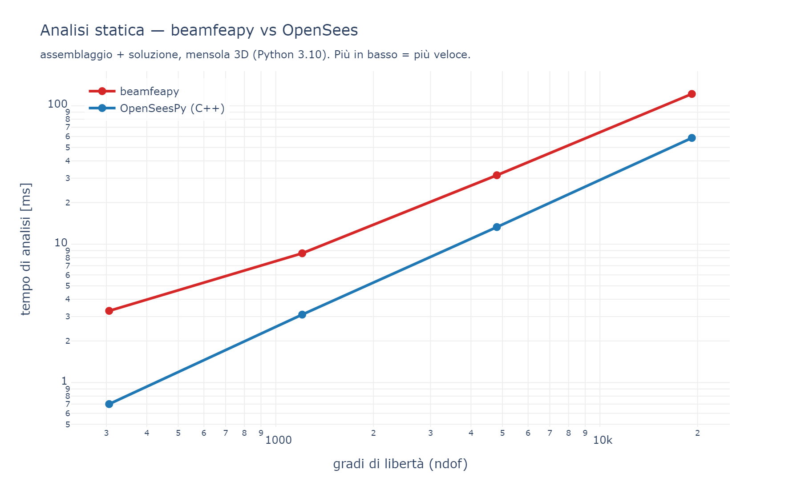
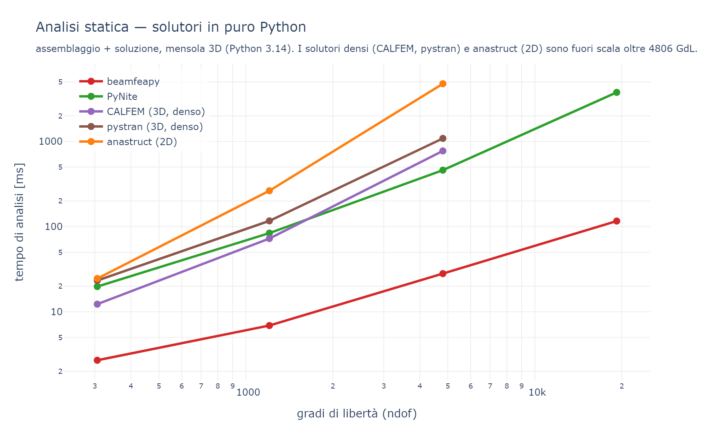
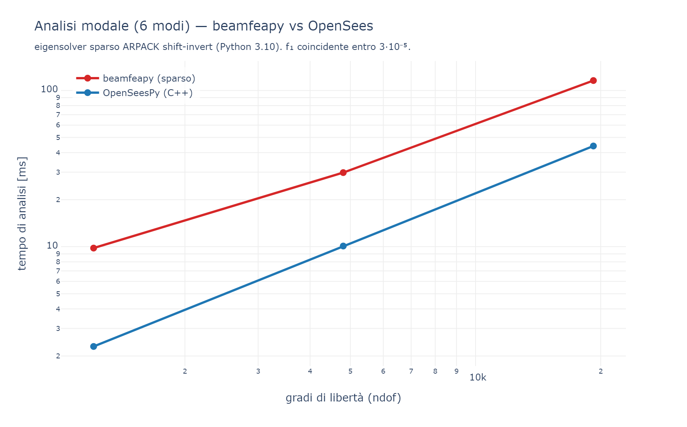
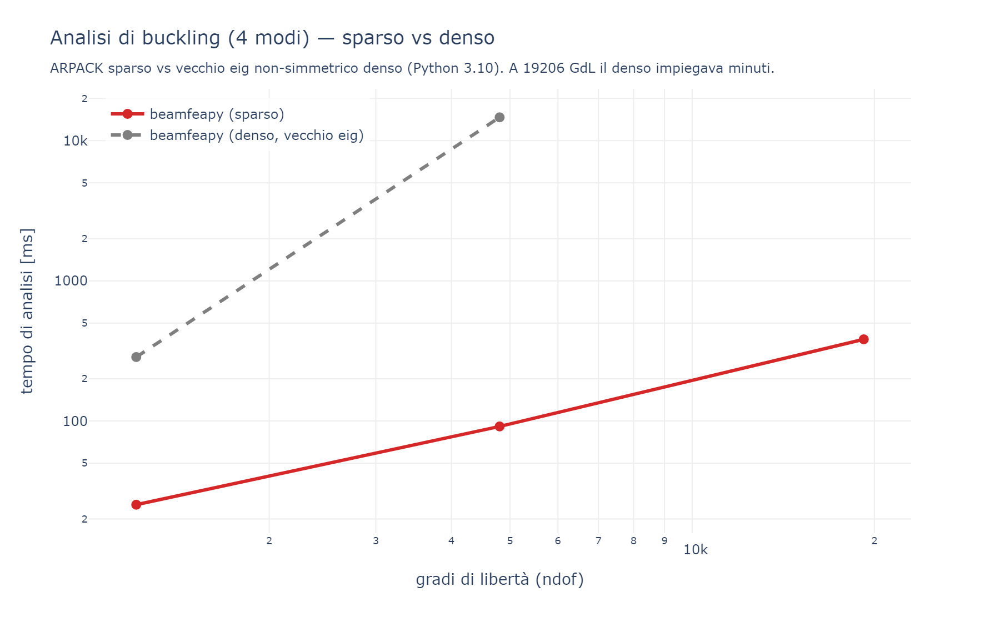

29 - Prestazioni e Benchmark
beamfeapy è scritto in Python/NumPy/SciPy, ma adotta tecniche di vettorizzazione e algebra sparsa che lo avvicinano ai solutori compilati (OpenSees, C++) e lo rendono nettamente più rapido degli altri solutori in puro Python.
Tutti i confronti usano lo stesso modello: una mensola 3D di N elementi
trave (lunghezza totale 50 m), carico distribuito + forza in punta per la statica,
massa propria per la modale, compressione assiale per il buckling. Si misura il
tempo della sola analisi (assemblaggio + soluzione), escludendo la
costruzione del modello. Le misure sono eseguite isolate (un benchmark per volta)
sulla stessa macchina; i grafici sono prodotti da benchmark/gen_benchmark_charts.py
a partire dagli script benchmark/benchmark_multi.py (statica) e
benchmark/benchmark_eigen.py (modale/buckling).
Solutori a confronto: beamfeapy, OpenSeesPy (FEM C++ di riferimento),
PyNite (frame 3D in puro Python), CALFEM (calfem-python, trave 3D
beam3e, assemblaggio denso), pystran (frame 3D in puro Python, denso) e
anastruct (frame 2D). Tutti concordano sulla freccia in punta (errore
relativo ≤ ~3·10⁻⁵, in genere a precisione macchina), quindi il confronto sui
tempi è significativo.
OpenSeesPy si importa su Python 3.10 (problema di DLL su 3.14): i confronti con OpenSees sono eseguiti su Python 3.10. I solutori in puro Python (beamfeapy, PyNite, CALFEM, pystran, anastruct) sono confrontati su Python 3.14.
Analisi statica — beamfeapy vs OpenSees

| GdL | beamfeapy | OpenSeesPy (C++) | rapporto |
|---|---|---|---|
| 306 | 3.3 ms | 0.7 ms | 4.7× |
| 1 206 | 8.6 ms | 3.1 ms | 2.8× |
| 4 806 | 32 ms | 13 ms | 2.4× |
| 19 206 | 122 ms | 59 ms | 2.1× |
La freccia in punta coincide con OpenSees a precisione macchina sui modelli ben condizionati. Il divario si riduce al crescere del problema (l'overhead Python si ammortizza): a 19 000 GdL beamfeapy è circa 2× OpenSees, un risultato notevole per un solutore in puro Python.
Analisi statica — solutori in puro Python

| GdL | beamfeapy | PyNite | CALFEM (3D) | pystran (3D) | anastruct (2D) |
|---|---|---|---|---|---|
| 306 | 2.7 ms | 20 ms | 12 ms | 23 ms | 25 ms |
| 1 206 | 6.9 ms | 84 ms | 73 ms | 117 ms | 264 ms |
| 4 806 | 28 ms | 461 ms | 775 ms | 1 087 ms | 4 765 ms |
| 19 206 | 116 ms | 3 773 ms | fuori scala | fuori scala | fuori scala |
beamfeapy è di gran lunga il più rapido fra i solutori in puro Python: ~16× più veloce di PyNite, ~28× di CALFEM, ~39× di pystran e ~170× di anastruct a 4806 GdL. CALFEM, pystran e anastruct usano assemblaggio/soluzione densi (O(n³), memoria O(n²)): oltre ~5000 GdL diventano impraticabili, mentre beamfeapy (sparso) sale a decine di migliaia di GdL. Tutti danno la stessa freccia (errore relativo ≤ ~3·10⁻⁵).
Analisi modale (6 modi)

Eigensolver sparso ARPACK (shift-invert a σ=0):
| GdL | beamfeapy | OpenSeesPy | errore f₁ |
|---|---|---|---|
| 1 206 | 9.8 ms | 2.3 ms | 7·10⁻⁹ |
| 4 806 | 30 ms | 10 ms | 5·10⁻⁷ |
| 19 206 | 116 ms | 44 ms | 2·10⁻⁵ |
Circa 2.6–4× OpenSees, con le prime frequenze coincidenti. Prima del percorso
sparso la modale usava un eigh denso con condensazione di Guyan, oltre 100× più
lenta su modelli grandi.
Analisi di buckling (4 moltiplicatori critici)

Eigensolver sparso generalizzato (−K_g) φ = μ K φ, μ = 1/λ:
| GdL | beamfeapy (sparso) | beamfeapy (denso, vecchio eig) |
speed-up |
|---|---|---|---|
| 1 206 | 25 ms | 286 ms | 11× |
| 4 806 | 92 ms | 14 676 ms | 160× |
| 19 206 | 383 ms | minuti | — |
Il primo moltiplicatore coincide con la soluzione di Eulero. Il passaggio
dall'eig non-simmetrico denso all'eigsh sparso porta a uno speed-up fino a
~160× sui modelli grandi.
Cosa rende veloce il solutore
- Forme chiuse per le forze nodali equivalenti dei carichi distribuiti (niente quadratura di Gauss).
- Assemblaggio vettorizzato con
np.matmulin batch su(ne, 12, 12). - Cache geometriche (vettore d'asse,
R,T,Klocale) con chiave sui valori. - Indice dei carichi per elemento calcolato in una passata e riusato.
- Eigensolver sparsi (ARPACK) per modale e buckling.
solve_many: più combinazioni con una sola fattorizzazione.- pypardiso opzionale (MKL) come solutore sparso (
pip install beamfeapy[fast]).
Riproducibilità
# i solutori extra si installano con:
pip install calfem-python pystran anastruct PyNiteFEA
python benchmark/benchmark_multi.py # statica: beamfeapy, PyNite, CALFEM, pystran, anastruct
py -3.10 benchmark/benchmark_multi.py # aggiunge OpenSeesPy (DLL su Python 3.10)
py -3.10 benchmark/benchmark_eigen.py # modale + buckling vs OpenSeesPy
python benchmark/gen_benchmark_charts.py # rigenera i grafici di questa pagina
I tempi assoluti dipendono dalla macchina; contano i rapporti.